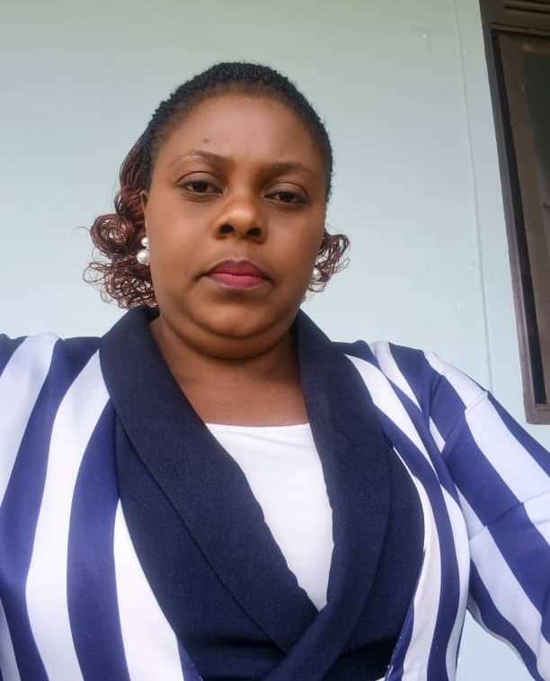
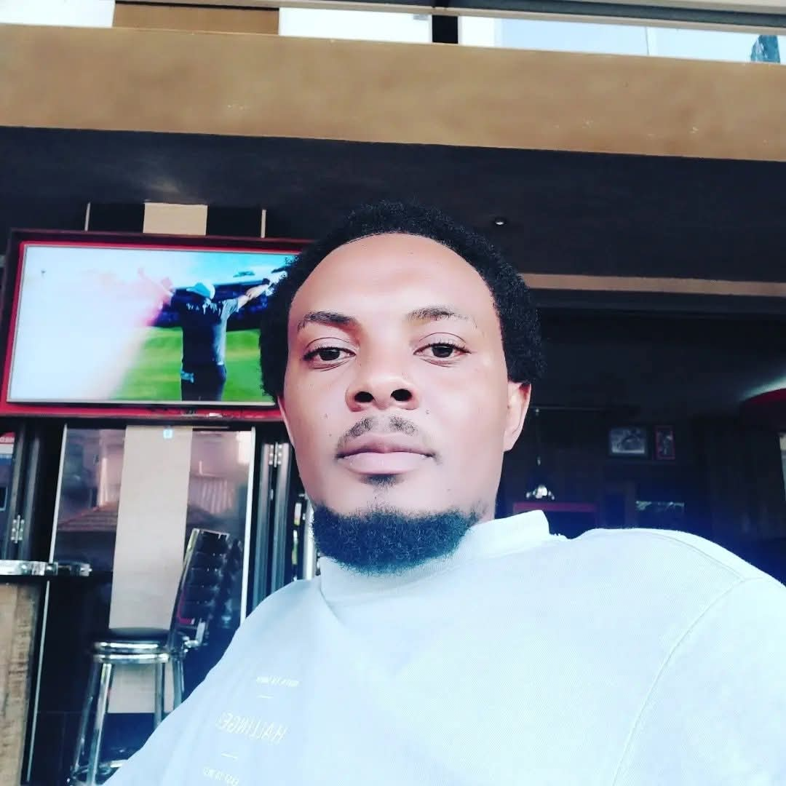
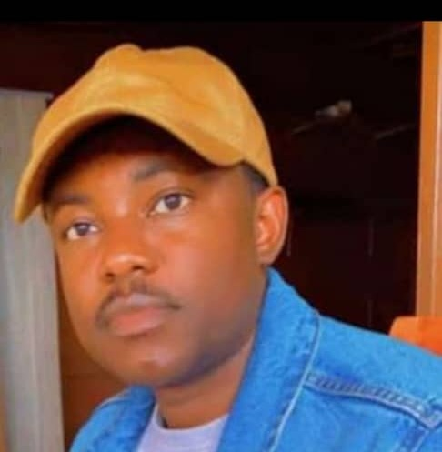
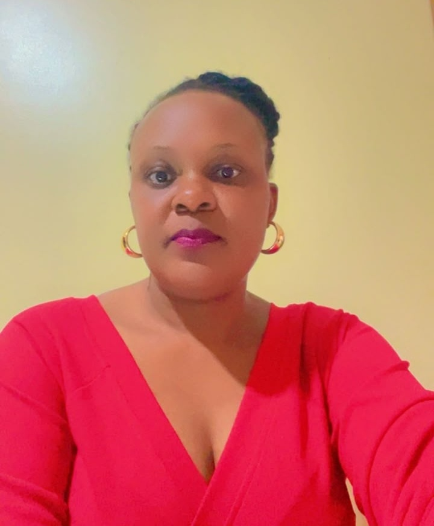
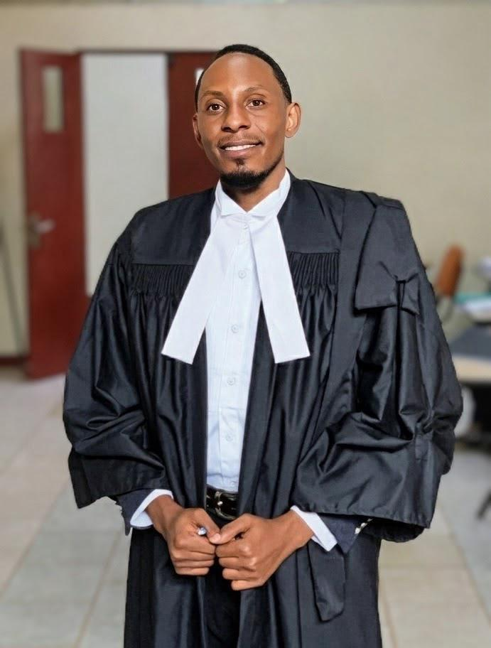
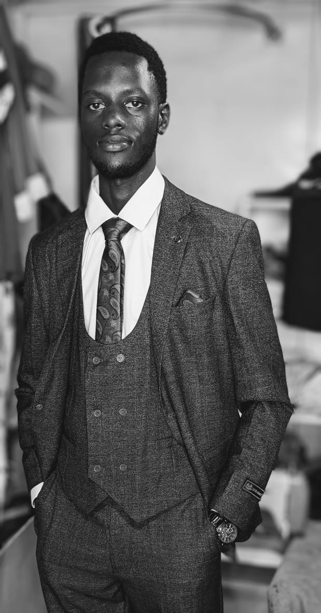

Dedicated professionals leading strategy, operations, finance, administration, monitoring, and legal protection for single mothers and children.

Meet our dedicated management and field officers delivering impact on the ground in Fort Portal Tourism City, Uganda. Click on any leader to view their full profile, bio, and key responsibilities.
Director & Founder
🎓 B. Public Administration (MMU)
Provides overall strategic leadership, resource mobilization, and organizational vision to uplift single mothers and children.

Finance / General Secretary
🎓 BSc Quantitative Economics (Makerere)
Oversees institutional governance, financial planning, budgeting, statutory compliance, and donor accountability.

Operations Manager
🎓 BSc Econ (Makerere) | MSc Dev Studies (Rotterdam)
Directs day-to-day grassroots operations, vocational skilling workshops, logistical support, and project site execution.
M&E Officer
🎓 B. Computer Science (MMU)
Leads program monitoring, digital data tracking, baseline surveys, impact evaluation, and quality assurance.

Administrator
🎓 B. Public Administration (MMU)
Manages central office operations, beneficiary documentation, institutional correspondence, and meeting records.

Legal Officer
🎓 Bachelor of Laws (Univ. of East Africa)
Champions legal aid services, protection of property and human rights, defense against GBV, and civic education.

IT / Technical Manager
🎓 BSc & MSc Biomedical Engineering (ECUREI)
Leads IT infrastructure, technical systems, data security, digital tools, and technology-driven community empowerment.